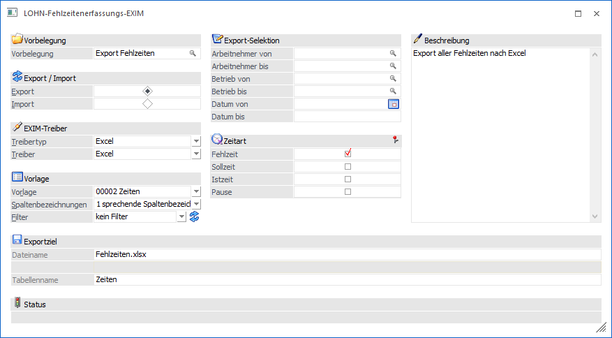
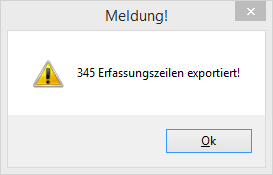

Wird diese Option gewählt, können nachfolgende Felder bearbeitet werden:

EXIM-Treiber
Ø Treibertyp
In diesem Bereich kann gewählt werden, ob der Export über den Treibertyp "Excel", "XML" bzw. "OBDC" erfolgen soll. Die weiteren Einstellungen dazu erfolgen im Feld "Treiber".
Ø Treiber
Hier kann auswählt werden, welches Datenformat beim Export erzeugt werden soll. Abhängig von der Einstellung im Feld "Treibertyp" sind die Auswahlmöglichkeiten unterschiedlich.
Wurde als Treibertyp die Auswahl Excel" gewählt, so steht als Treiber ebenfalls der Eintrag "Excel" zur Verfügung.
Wurde als Treibertyp "XML" selektiert, so lautet der zugehörige Treiber "XML (Webservice)". Diese Treiber-Option kann nur in Verbindung mit einer Vorlage verwendet werden, die zuvor als "Webservice-Vorlage" angelegt wurde.
Für den Treibertyp "ODBC-Treiber" stehen alle ODBC-Treiber zur Auswahl, die im System installiert sind, z.B.:

Je nachdem, welcher Treiber gewählt wurde, wird die weitere Eingabe des Zielpfades und des Namens der Ausgabedatei bzw. Tabelle oder Datenbank gestaltet (Bereich Exportziel).
Beispiel
Wird das Format "MS-Access Treiber (MDB)" gewählt, erfolgt die Aufforderung, den Pfad, den Datenbanknamen, sowie den Namen der Tabelle anzugeben, in welcher die Datensätze ausgegeben werden sollen.
Wird z.B. das Format MS-SQL-Server gewählt, so muss der SQL-Servername, sowie der Datenbank- und Tabellenname eingetragen werden, etc. .
Ø Vorlage
Eingabe der Vorlage, die für den Export verwendet werden soll. Aus der Auswahllistbox kann eine der Vorlagen gewählt werden, die für den Im- oder Export von Fehlzeiten erstellt wurde. Die Vorlagen selbst werden im Programm WinLine START über den Menüpunkt Vorlagen/Vorlagen Anlage angelegt.
Mögliche Felder der Vorlage:
|
Feld |
Beschreibung |
|
Von |
Datum / Uhrzeit Beginn Fehlzeit (die Uhrzeit ist abhängig von der Fehlzeit anzugeben) |
|
Bis |
Datum / Uhrzeit Ende Fehlzeit (die Uhrzeit ist abhängig von der Fehlzeit anzugeben) |
|
Fehlzeitenstamm |
Fehlzeitennummer / Zeitartennummer (lt. Zeitartenstamm) |
|
AN/Gruppe/Ressource |
Personalnummer, 20stellig, alphanumerisch |
|
Dauer |
Optional kann die Fehlzeitendauer in der Einheit der Fehlzeit verwendet werden, falls diese von dem errechneten Wert abweicht. |
|
Notiz |
Hinterlegung einer zusätzlichen Bemerkung zur Fehlzeit |
|
Typ (Zeitart/Pause) |
Angabe des Zeitartentyps - Zeitart oder Pause |
|
Importoption |
Hat beim Export keine Funktion und wird nicht gefüllt |
Ø Spaltenbezeichnungen
In diesem Feld kann festgelegt werden, ob, bzw. mit welcher Art von Spaltenbezeichnungen gearbeitet werden soll.
ü 0 - numerische
Spaltenbezeichnungen:
Die Exportdatei bzw. Tabelle erhält jeweils die
Spaltenbezeichnung, wie sie auch in den Tabellen der WinLine-Datenbank heißen.
Wenn Daten mit numerischen Spaltenbezeichnung importiert werden sollen, dann
sollte vorher ein Test-Export durchgeführt werden, damit bekannt ist, wie die
einzelnen Felder benannt werden müssen.
ü 1 - sprechende
Spaltenbezeichnungen:
Die Exportdatei bzw. Tabelle erhält jeweils die
Spaltenbezeichnung, die auch in der Vorlage definiert wurde. Beim Import muss
darauf geachtet werden, dass die erste Spalte (dort wird der Key (z.B. Konto-
oder Artikelnummer) gespeichert) der Bezeichnung in der Vorlage entspricht.
ü 2 - keine Spaltenbezeichnungen:
Diese Auswahlmöglichkeit steht nur bei Verwendung des Treibertyps "Excel"
zur Verfügung. Damit werden keine Spaltenbezeichnungen ausgegeben.
Ø Filter
Durch Auswahl eines Filters aus der Auswahllistbox (hier werden alle bereits angelegten Filter für den ausgewählten Stammdatentyp angezeigt) kann die Ausgabe der Datensätze auf bestimmte Datensätze beschränkt werden (z.B. nur eine bestimmte Zeitart soll exportiert werden).
Die Anlage der Filter erfolgt durch Anklicken des Filter-Buttons, der sich neben dem Eingabefeld befindet - damit öffnet sich der Filter-Assistent, der durch die Anlage eines Filters führt. Wird ein neuer Filter angelegt, dann wird dieser automatisch in das Eingabefenster gestellt und kann natürlich durch einen anderen (bzw. keinen Filter) aus der Auswahllistbox ersetzt werden.
Export-Selektion
Ø Arbeitnehmer von - bis
Einschränkung der AN, für die Zeiten exportiert werden sollen. Wie die AN-Nummer eingegeben werden kann, dazu gibt es mehrere Möglichkeiten. Details dazu entnehmen Sie bitte dem Kapitel Aufruf einer AN-Nummer.
Ø Betrieb von - bis
Einschränkung der Betriebsnummer, für die der Export durchgeführt werden soll. Mit der Matchcode-Funktion kann nach allen vorhandenen Betrieben gesucht werden.
Hinweis:
Diese Selektion steht im Fehlzeitenerfassungs-EXIM im WinLine INFO nicht zur Verfügung.
Ø Datum von - bis
Einschränkung des Datumbereichs, für den der Export durchgeführt werden soll.
Zeitart
In diesem Bereich kann selektiert werden, welche Zeitartentypen exportiert werden sollen, dabei stehen folgende Möglichkeiten zur Verfügung:
ü Fehlzeit
Dabei handelt es sich
um Fehlzeiten wie Krank, Urlaub etc.
ü Sollzeit
Darunter sind die
Sollzeiten gemäß Arbeitszeitmodell zu verstehen.
ü Istzeit
Damit werden die
erfassten Istzeiten ausgegeben.
ü Pause
Damit können erfasste
Pausen-Zeiten exportiert werden.
Exportziel
Ø Beschreibung von Datei bzw. Datenbank.
In Abhängigkeit der am PC installierten ODBC-Treiber werden Felder angezeigt, in denen das Ziel (Bereich in den die Daten aus der WinLine kommend abgespeichert werden) beschrieben werden.
Bei der Wahl von Datenbanken als Ziel, müssen der Datenbankpfad, der Datenbankname und der Tabellennamen angegeben werden.
Achtung:
Der ODBC-Treiber kann zwar innerhalb von Datenbanken (ACCESS oder EXCEL) Tabellen erzeugen und diese Tabellen mit Datensätzen füllen, er kann aber nicht die Datenbank selbst erstellen. Diese muss bereits vorhanden sein.
Hinweis:
Je nachdem, welche ODBC-Treiber verwendet werden bzw. welche ODBC-Treiber-Version verwendet wird, kann es zu ungewünschten Verhalten des Export/Imports kommen, wenn Sonderzeichen im Verzeichnisnamen oder im Datenbankname vorkommen. Aus diesem Grund wird - wenn solche Sonderzeichen verwendet werden - eine entsprechende Warnmeldung ausgegeben:
Buttons
Ø OK-Button
Durch Anklicken des OK-Buttons wird der Export gemäß den Einstellungen durchgeführt. Wenn der Export abgeschlossen ist, wird auch eine entsprechende Meldung ausgegeben.

Ø ENDE-Button
Durch Anklicken des ENDE-Buttons wird das Fenster geschlossen.
Ø Eingabe initialisieren
Durch Anklicken des Buttons "Eingabe initialisieren" bzw. durch Drücken der F4-Taste werden alle vorgenommenen Einstellungen zurückgesetzt (wie wenn das Fenster neu geöffnet wird).
Ø Exportvorschau
Wenn der Button "Exportvorschau" angeklickt wird, dann wird eine Tabelle angezeigt, in der alle Zeilen, die gemäß Einstellungen exportiert werden würden, sichtbar sind. So kann das Exportergebnis nochmals kontrolliert werden.
Durch Anklicken des "Zurück"-Buttons gelangt man wieder in das Steuerfenster zurück.